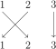

Section B.3 Functions
¶\(\textit{}\)A function is a rule that assigns each input exactly one output. We call the output the image of the input. The set of all inputs for a function is called the domain. The set of all allowable outputs is called the codomain. We would write \(f:X \to Y\) to describe a function with name \(f\text{,}\) domain \(X\) and codomain \(Y\text{.}\) This does not tell us which function \(f\) is though. To define the function, we must describe the rule. This is often done by giving a formula to compute the output for any input (although this is certainly not the only way to describe the rule).
For example, consider the function \(f:\N \to \N\) defined by \(f(x) = x^2 + 3\text{.}\) Here the domain and codomain are the same set (the natural numbers). The rule is: take your input, multiply it by itself and add 3. This works because we can apply this rule to every natural number (every element of the domain) and the result is always a natural number (an element of the codomain). Notice though that not every natural number is actually an output (there is no way to get 0, 1, 2, 5, etc.). The set of natural numbers that are outputs is called the range of the function (in this case, the range is \(\{3, 4, 7, 12, 19, 28, \ldots\}\text{,}\) all the natural numbers that are 3 more than a perfect square).
The key thing that makes a rule a function is that there is exactly one output for each input. That is, it is important that the rule be a good rule. What output do we assign to the input 7? There can only be one answer for any particular function.
Example B.3.1.
The following are all examples of functions:
\(f:\Z \to \Z\) defined by \(f(n) = 3n\text{.}\) The domain and codomain are both the set of integers. However, the range is only the set of integer multiples of 3.
\(g: \{1,2,3\} \to \{a,b,c\}\) defined by \(g(1) = c\text{,}\) \(g(2) = a\) and \(g(3) = a\text{.}\) The domain is the set \(\{1,2,3\}\text{,}\) the codomain is the set \(\{a,b,c\}\) and the range is the set \(\{a,c\}\text{.}\) Note that \(g(2)\) and \(g(3)\) are the same element of the codomain. This is okay since each element in the domain still has only one output.
-
\(h:\{1,2,3,4\} \to \N\) defined by the table:
\(x\) 1 2 3 4 \(h(x)\) 3 6 9 12 Here the domain is the finite set \(\{1,2,3,4\}\) and to codomain is the set of natural numbers, \(\N\text{.}\) At first you might think this function is the same as \(f\) defined above. It is absolutely not. Even though the rule is the same, the domain and codomain are different, so these are two different functions.
Example B.3.2.
Just because you can describe a rule in the same way you would write a function, does not mean that the rule is a function. The following are NOT functions.
\(f:\N \to \N\) defined by \(f(n) = \frac{n}{2}\text{.}\) The reason this is not a function is because not every input has an output. Where does \(f\) send 3? The rule says that \(f(3) = \frac{3}{2}\text{,}\) but \(\frac{3}{2}\) is not an element of the codomain.
Consider the rule that matches each person to their phone number. If you think of the set of people as the domain and the set of phone numbers as the codomain, then this is not a function, since some people have two phone numbers. Switching the domain and codomain sets doesn't help either, since some phone numbers belong to multiple people (assuming some households still have landlines when you are reading this).
Subsection B.3.1 Describing Functions
It is worth making a distinction between a function and its description. The function is the abstract mathematical object that in some way exists whether or not anyone ever talks about it. But when we do want to talk about the function, we need a way to describe it. A particular function can be described in multiple ways.
Some calculus textbooks talk about the Rule of Four, that every function can be described in four ways: algebraically (a formula), numerically (a table), graphically, or in words. In discrete math, we can still use any of these to describe functions, but we can also be more specific since we are primarily concerned with functions that have \(\N\) or a finite subset of \(\N\) as their domain.
Describing a function graphically usually means drawing the graph of the function: plotting the points on the plain. We can do this, and might get a graph like the following for a function \(f:\{1,2,3\} \to \{1,2,3\}\text{.}\)
It would be absolutely WRONG to connect the dots or try to fit them to some curve. There are only three elements in the domain. A curve would mean that the domain contains an entire interval of real numbers.
Here is another way to represent that same function:
This shows that the function \(f\) sends 1 to 2, 2 to 1 and 3 to 3: just follow the arrows.
The arrow diagram used to define the function above can be very helpful in visualizing functions. We will often be working with functions with finite domains, so this kind of picture is often more useful than a traditional graph of a function.
Note that for finite domains, finding an algebraic formula that gives the output for any input is often impossible. Of course we could use a piecewise defined function, like
This describes exactly the same function as above, but we can all agree is a ridiculous way of doing so.
Since we will so often use functions with small domains and codomains, let's adopt some notation to describe them. All we need is some clear way of denoting the image of each element in the domain. In fact, writing a table of values would work perfectly:
| \(x\) | 0 | 1 | 2 | 3 | 4 |
| \(f(x)\) | 3 | 3 | 2 | 4 | 1 |
We simplify this further by writing this as a matrix with each input directly over its output:
Note this is just notation and not the same sort of matrix you would find in a linear algebra class (it does not make sense to do operations with these matrices, or row reduce them, for example).
One advantage of the two-line notation over the arrow diagrams is that it is harder to accidentally define a rule that is not a function using two-line notation.
Example B.3.3.
Which of the following diagrams represent a function? Let \(X = \{1,2,3,4\}\) and \(Y = \{a,b,c,d\}\text{.}\)

\(f\) is a function. So is \(g\text{.}\) There is no problem with an element of the codomain not being the image of any input, and there is no problem with \(a\) from the codomain being the image of both 2 and 3 from the domain. We could use our two-line notation to write these as
However, \(h\) is NOT a function. In fact, it fails for two reasons. First, the element 1 from the domain has not been mapped to any element from the codomain. Second, the element 2 from the domain has been mapped to more than one element from the codomain (\(a\) and \(c\)). Note that either one of these problems is enough to make a rule not a function. In general, neither of the following mappings are functions:
It might also be helpful to think about how you would write the two-line notation for \(h\text{.}\) We would have something like:
There is nothing under 1 (bad) and we needed to put more than one thing under 2 (very bad). With a rule that is actually a function, the two-line notation will always “work”.
We will also be interested in functions with domain \(\N\text{.}\) Here two-line notation is no good, but describing the function algebraically is often possible. Even tables are a little awkward, since they do not describe the function completely. For example, consider the function \(f:\N \to \N\) given by the table below.
| \(x\) | 0 | 1 | 2 | 3 | 4 | 5 | \(\ldots\) |
| \(f(x)\) | 0 | 1 | 4 | 9 | 16 | 25 | \(\ldots\) |
Have I given you enough entries for you to be able to determine \(f(6)\text{?}\) You might guess that \(f(6) = 36\text{,}\) but there is no way for you to know this for sure. Maybe I am being a jerk and intended \(f(6) = 42\text{.}\) In fact, for every natural number \(n\text{,}\) there is a function that agrees with the table above, but for which \(f(6) = n\text{.}\)
Okay, suppose I really did mean for \(f(6) = 36\text{,}\) and in fact, for the rule that you think is governing the function to actually be the rule. Then I should say what that rule is. \(f(n) = n^2\text{.}\) Now there is no confusion possible.
Giving an explicit formula that calculates the image of any element in the domain is a great way to describe a function. We will say that these explicit rules are closed formulas for the function.
There is another very useful way to describe functions whose domain is \(\N\text{,}\) that rely specifically on the structure of the natural numbers. We can define a function recursively!
Example B.3.4.
Consider the function \(f:\N \to \N\) given by \(f(0) = 0\) and \(f(n+1) = f(n) + 2n+1\text{.}\) Find \(f(6)\text{.}\)
The rule says that \(f(6) = f(5) + 11\) (we are using \(6 = n+1\) so \(n = 5\)). We don't know what \(f(5)\) is though. Well, we know that \(f(5) = f(4) + 9\text{.}\) So we need to compute \(f(4)\text{,}\) which will require knowing \(f(3)\text{,}\) which will require \(f(2)\text{,}\)… will it ever end?
Yes! In fact, this process will always end because we have \(\N\) as our domain, so there is a least element. And we gave the value of \(f(0)\) explicitly, so we are good. In fact, we might decide to work up to \(f(6)\) instead of working down from \(f(6)\text{:}\)
It looks that this recursively defined function is the same as the explicitly defined function \(f(n) = n^2\text{.}\) Is it? Later we will prove that it is.
Recursively defined functions are often easier to create from a “real world” problem, because they describe how the values of the functions are changing. However, this comes with a price. It is harder to calculate the image of a single input, since you need to know the images of other (previous) elements in the domain.
Recursively Defined Functions.
For a function \(f:\N \to \N\text{,}\) a recursive definition consists of an initial condition together with a recurrence relation. The initial condition is the explicitly given value of \(f(0)\text{.}\) The recurrence relation is a formula for \(f(n+1)\) in terms for \(f(n)\) (and possibly \(n\) itself).
Example B.3.5.
Give recursive definitions for the functions described below.
\(f:\N \to \N\) gives the number of snails in your terrarium \(n\) years after you built it, assuming you started with 3 snails and the number of snails doubles each year.
\(g:\N \to \N\) gives the number of push-ups you do \(n\) days after you started your push-ups challenge, assuming you could do 7 push-ups on day 0 and you can do 2 more push-ups each day.
\(h:\N \to \N\) defined by \(f(n) = n!\text{.}\) Recall that \(n! = 1 \cdot 2 \cdot 3 \cdot \cdots \cdot (n-1)\cdot n\) is the product of all numbers from \(1\) through \(n\text{.}\) We also define \(0! = 1\text{.}\)
-
The initial condition is \(f(0) = 3\text{.}\) To get \(f(n+1)\) we would double the number of snails in the terrarium the previous year, which is given by \(f(n)\text{.}\) Thus \(f(n+1) = 2f(n)\text{.}\) The full recursive definition contains both of these, and would be written,
\begin{equation*} f(0) = 3;~ f(n+1) = 2f(n)\text{.} \end{equation*} -
We are told that on day 0 you can do 7 push-ups, so \(f(0) = 7\text{.}\) The number of push-ups you can do on day \(n+1\) is 2 more than the number you can do on day \(n\text{,}\) which is given by \(f(n)\text{.}\) Thus
\begin{equation*} f(0) = 7;~ f(n+1) = f(n) + 2\text{.} \end{equation*} -
Here \(f(0) = 1\text{.}\) To get the recurrence relation, think about how you can get \(f(n+1) = (n+1)!\) from \(f(n) = n!\text{.}\) If you write out both of these as products, you see that \((n+1)!\) is just like \(n!\) except you have one more term in the product, an extra \(n+1\text{.}\) So we have,
\begin{equation*} f(0) = 1;~ f(n+1) = (n+1)\cdot f(n)\text{.} \end{equation*}
Subsection B.3.2 Surjections, Injections, and Bijections
¶We now turn to investigating special properties functions might or might not possess.
In the examples above, you may have noticed that sometimes there are elements of the codomain which are not in the range. When this sort of the thing does not happen, (that is, when everything in the codomain is in the range) we say the function is onto or that the function maps the domain onto the codomain. This terminology should make sense: the function puts the domain (entirely) on top of the codomain. The fancy math term for an onto function is a surjection, and we say that an onto function is a surjective function.
In pictures:

Example B.3.6.
Which functions are surjective (i.e., onto)?
- \(f:\Z \to \Z\) defined by \(f(n) = 3n\text{.}\)
- \(g: \{1,2,3\} \to \{a,b,c\}\) defined by \(g = \begin{pmatrix}1 \amp 2 \amp 3 \\ c \amp a \amp a \end{pmatrix}\text{.}\)
-
\(h:\{1,2,3\} \to \{1,2,3\}\) defined as follows:

- \(f\) is not surjective. There are elements in the codomain which are not in the range. For example, no \(n \in \Z\) gets mapped to the number 1 (the rule would say that \(\frac{1}{3}\) would be sent to 1, but \(\frac{1}{3}\) is not in the domain). In fact, the range of the function is \(3\Z\) (the integer multiples of 3), which is not equal to \(\Z\text{.}\)
- \(g\) is not surjective. There is no \(x \in \{1,2,3\}\) (the domain) for which \(g(x) = b\text{,}\) so \(b\text{,}\) which is in the codomain, is not in the range. Notice that there is an element from the codomain “missing” from the bottom row of the matrix.
- \(h\) is surjective. Every element of the codomain is also in the range. Nothing in the codomain is missed.
To be a function, a rule cannot assign a single element of the domain to two or more different elements of the codomain. However, we have seen that the reverse is permissible: a function might assign the same element of the codomain to two or more different elements of the domain. When this does not occur (that is, when each element of the codomain is the image of at most one element of the domain) then we say the function is one-to-one. Again, this terminology makes sense: we are sending at most one element from the domain to one element from the codomain. One input to one output. The fancy math term for a one-to-one function is an injection. We call one-to-one functions injective functions.
In pictures:
Example B.3.7.
Which functions are injective (i.e., one-to-one)?
- \(f:\Z \to \Z\) defined by \(f(n) = 3n\text{.}\)
- \(g: \{1,2,3\} \to \{a,b,c\}\) defined by \(g = \begin{pmatrix}1 \amp 2 \amp 3 \\ c \amp a \amp a \end{pmatrix}\text{.}\)
-
\(h:\{1,2,3\} \to \{1,2,3\}\) defined as follows:

- \(f\) is injective. Each element in the codomain is assigned to at most one element from the domain. If \(x\) is a multiple of three, then only \(x/3\) is mapped to \(x\text{.}\) If \(x\) is not a multiple of 3, then there is no input corresponding to the output \(x\text{.}\)
- \(g\) is not injective. Both inputs \(2\) and \(3\) are assigned the output \(a\text{.}\) Notice that there is an element from the codomain that appears more than once on the bottom row of the matrix.
- \(h\) is injective. Each output is only an output once.
Be careful: “surjective” and “injective” are NOT opposites. You can see in the two examples above that there are functions which are surjective but not injective, injective but not surjective, both, or neither. In the case when a function is both one-to-one and onto (an injection and surjection), we say the function is a bijection, or that the function is a bijective function.
To illustrate the contrast between these two properties, consider a more formal definition of each, side by side.
Injective vs Surjective.
A function is injective provided every element of the codomain is the image of at most one element from the domain.
A function is surjective provided every element of the codomain is the image of at least one element from the domain.
Notice both properties are determined by what happens to elements of the codomain: they could be repeated as images or they could be “missed” (not be images). Injective functions do not have repeats but might or might not miss elements. Surjective functions do not miss elements, but might or might not have repeats. The bijective functions are those that do not have repeats and do not miss elements.
Subsection B.3.3 Image and Inverse Image
When discussing functions, we have notation for talking about an element of the domain (say \(x\)) and its corresponding element in the codomain (we write \(f(x)\text{,}\) which is the image of \(x\)). Sometimes we will want to talk about all the elements that are images of some subset of the domain. It would also be nice to start with some element of the codomain (say \(y\)) and talk about which element or elements (if any) from the domain it is the image of. We could write “those \(x\) in the domain such that \(f(x) = y\text{,}\)” but this is a lot of writing. Here is some notation to make our lives easier.
To address the first situation, what we are after is a way to describe the set of images of elements in some subset of the domain. Suppose \(f:X \to Y\) is a function and that \(A \subseteq X\) is some subset of the domain (possibly all of it). We will use the notation \(f(A)\) to denote the image of \(A\) under \(f\), namely the set of elements in \(Y\) that are the image of elements from \(A\text{.}\) That is, \(f(A) = \{f(a) \in Y \st a \in A\}\text{.}\)
We can do this in the other direction as well. We might ask which elements of the domain get mapped to a particular set in the codomain. Let \(f:X \to Y\) be a function and suppose \(B \subseteq Y\) is a subset of the codomain. Then we will write \(f\inv(B)\) for the inverse image of \(B\) under \(f\), namely the set of elements in \(X\) whose image are elements in \(B\text{.}\) In other words, \(f\inv(B) = \{x \in X \st f(x) \in B\}\text{.}\)
Often we are interested in the element(s) whose image is a particular element \(y\) of in the codomain. The notation above works: \(f\inv(\{y\})\) is the set of all elements in the domain that \(f\) sends to \(y\text{.}\) It makes sense to think of this as a set: there might not be anything sent to \(y\) (if \(y\) is not in the range), in which case \(f\inv(\{y\}) = \emptyset\text{.}\) Or \(f\) might send multiple elements to \(y\) (if \(f\) is not injective). As a notational convenience, we usually drop the set braces around the \(y\) and write \(f\inf(y)\) instead for this set.
WARNING: \(f\inv(y)\) is not an inverse function! Inverse functions only exist for bijections, but \(f\inv(y)\) is defined for any function \(f\text{.}\) The point: \(f\inv(y)\) is a set, not an element of the domain. This is just sloppy notation for \(f\inv(\{y\})\text{.}\) To help make this distinction, we would call \(f\inv(y)\) the complete inverse image of \(y\) under \(f\). It is not the image of \(y\) under \(f\inv\) (since the function \(f\inv\) might not exist).
Example B.3.8.
Consider the function \(f:\{1,2,3,4,5,6\} \to \{a,b,c,d\}\) given by
Find \(f(\{1,2,3\})\text{,}\) \(f\inf(\{a,b\})\text{,}\) and \(f\inv(d)\text{.}\)
\(f(\{1,2,3\}) = \{a,b\}\) since \(a\) and \(b\) are the elements in the codomain to which \(f\) sends \(1\) and \(2\text{.}\)
\(f\inf(\{a,b\}) = \{1,2,3,4,5\}\) since these are exactly the elements that \(f\) sends to \(a\) and \(b\text{.}\)
\(f\inf(d) = \emptyset\) since \(d\) is not in the range of \(f\text{.}\)
Example B.3.9.
Consider the function \(g:\Z \to \Z\) defined by \(g(n) = n^2 + 1\text{.}\) Find \(g(1)\) and \(g(\{1\})\text{.}\) Then find \(g\inv(1)\text{,}\) \(g\inv(2)\text{,}\) and \(g\inv(3)\text{.}\)
Note that \(g(1) \ne g(\{1\})\text{.}\) The first is an element: \(g(1) = 2\text{.}\) The second is a set: \(g(\{1\}) = \{2\}\text{.}\)
To find \(g\inv(1)\text{,}\) we need to find all integers \(n\) such that \(n^2 + 1 = 1\text{.}\) Clearly only 0 works, so \(g\inv(1) = \{0\}\) (note that even though there is only one element, we still write it as a set with one element in it).
To find \(g\inv(2)\text{,}\) we need to find all \(n\) such that \(n^2 + 1 = 2\text{.}\) We see \(g\inv(2) = \{-1,1\}\text{.}\)
Finally, if \(n^2 + 1 = 3\text{,}\) then we are looking for an \(n\) such that \(n^2 = 2\text{.}\) There are no such integers so \(g\inv(3) = \emptyset\text{.}\)
Since \(f\inv(y)\) is a set, it makes sense to ask for \(\card{f\inv(y)}\text{,}\) the number of elements in the domain which map to \(y\text{.}\)
Example B.3.10.
Find a function \(f:\{1,2,3,4,5\} \to \N\) such that \(\card{f\inv(7)} = 5\text{.}\)
There is only one such function. We need five elements of the domain to map to the number \(7 \in \N\text{.}\) Since there are only five elements in the domain, all of them must map to 7. So
Function Definitions.
Here is a summary of all the main concepts and definitions we use when working with functions.
A function is a rule that assigns each element of a set, called the domain, to exactly one element of a second set, called the codomain.
Notation: \(f:X \to Y\) is our way of saying that the function is called \(f\text{,}\) the domain is the set \(X\text{,}\) and the codomain is the set \(Y\text{.}\)
-
To specify the rule for a function with small domain, use two-line notation by writing a matrix with each output directly below its corresponding input, as in:
\begin{equation*} f = \begin{pmatrix}1 \amp 2 \amp 3 \amp 4 \\ 2 \amp 1 \amp 3 \amp 1 \end{pmatrix}\text{.} \end{equation*} \(f(x) = y\) means the element \(x\) of the domain (input) is assigned to the element \(y\) of the codomain. We say \(y\) is an output. Alternatively, we call \(y\) the image of \(x\) under \(f\).
The range is a subset of the codomain. It is the set of all elements which are assigned to at least one element of the domain by the function. That is, the range is the set of all outputs.
A function is injective (an injection or one-to-one) if every element of the codomain is the image of at most one element from the domain.
A function is surjective (a surjection or onto) if every element of the codomain is the image of at least one element from the domain.
A bijection is a function which is both an injection and surjection. In other words, if every element of the codomain is the image of exactly one element from the domain.
The image of an element \(x\) in the domain is the element \(y\) in the codomain that \(x\) is mapped to. That is, the image of \(x\) under \(f\) is \(f(x)\text{.}\)
The complete inverse image of an element \(y\) in the codomain, written \(f\inv(y)\text{,}\) is the set of all elements in the domain which are assigned to \(y\) by the function.
The image of a subset \(A\) of the domain is the set \(f(A) = \{f(a) \in Y \st a \in A\}\text{.}\)
The inverse image of a a subset \(B\) of the codomain is the set \(f\inv(B) = \{x \in X \st f(x) \in B\}\text{.}\)
Exercises B.3.4 Exercises
¶1.
Consider the function \(f:\{1,2,3,4\} \to \{1,2,3,4\}\) given by
Find \(f(1)\text{.}\)
Find an element \(n\) in the domain such that \(f(n) = 1\text{.}\)
Find an element \(n\) of the domain such that \(f(n) = n\text{.}\)
Find an element of the codomain that is not in the range.
\(f(1) = 4\text{,}\) since \(4\) is the number below 1 in the two-line notation.
Such an \(n\) is \(n= 2\text{,}\) since \(f(2) = 1\text{.}\) Note that 2 is above a 1 in the notation.
\(n = 4\) has this property. We say that 4 is a fixed point of \(f\text{.}\) Not all functions have such a point.
Such an element is 2 (in fact, that is the only element in the codomain that is not in the range). In other words, 2 is not the image of any element under \(f\text{;}\) nothing is sent to 2.
2.
The following functions all have \(\{1,2,3,4,5\}\) as both their domain and codomain. For each, determine whether it is (only) injective, (only) surjective, bijective, or neither injective nor surjective.
\(f = \twoline{1 \amp 2 \amp 3 \amp 4 \amp 5}{3 \amp 3 \amp 3 \amp 3 \amp 3}\text{.}\)
Injective
Surjective
Bijective
Neither
\(f = \twoline{1 \amp 2 \amp 3 \amp 4 \amp 5}{2 \amp 3 \amp 1 \amp 5 \amp 4}\text{.}\)
Injective
Surjective
Bijective
Neither
\(f(x) = 6 - x\text{.}\)
Injective
Surjective
Bijective
Neither
\(f(x) = \begin{cases} x/2 \amp \text{ if } x \text{ is even} \\ (x+1)/2 \amp \text{ if } x \text{ is odd}\end{cases}\text{.}\)
Injective
Surjective
Bijective
Neither
This is neither injective nor surjective. It is not injective because more than one element from the domain has 3 as its image. It is not surjective because there are elements of the codomain (1, 2, 4, and 5) that are not images of anything from the domain.
This is a bijection. Every element in the codomain is the image of exactly one element of the domain.
This is a bijection. Note that we can write this function in two line notation as \(f = \twoline{1 \amp 2 \amp 3 \amp 4 \amp 5}{5 \amp 4 \amp 3 \amp 2 \amp 1}\text{.}\)
In two line notation, this function is \(f = \twoline{1 \amp 2 \amp 3 \amp 4 \amp 5}{1 \amp 1 \amp 2 \amp 2 \amp 3}\text{.}\) From this we can quickly see it is neither injective (for example, 1 is the image of both 1 and 2) nor surjective (for example, 4 is not the image of anything).
3.
The following functions all have domain \(\{1,2,3,4,5\}\) and codomain \(\{1,2,3\}\text{.}\) For each, determine whether it is (only) injective, (only) surjective, bijective, or neither injective nor surjective.
\(f = \twoline{1 \amp 2 \amp 3 \amp 4 \amp 5}{1 \amp 2 \amp 1 \amp 2 \amp 1}\text{.}\)
Injective
Surjective
Bijective
Neither
\(f = \twoline{1 \amp 2 \amp 3 \amp 4 \amp 5}{1 \amp 2 \amp 3 \amp 1 \amp 2}\text{.}\)
Injective
Surjective
Bijective
Neither
\(f(x) = \begin{cases} x \amp \text{ if } x \le 3 \\ x-3 \amp \text{ if } x \gt 3\end{cases}\text{.}\)
Injective
Surjective
Bijective
Neither
4.
The following functions all have domain \(\{1,2,3,4\}\) and codomain \(\{1,2,3,4,5\}\text{.}\) For each, determine whether it is (only) injective, (only) surjective, bijective, or neither injective nor surjective.
\(f = \twoline{1 \amp 2 \amp 3 \amp 4}{1 \amp 2 \amp 5 \amp 4}\text{.}\)
Injective
Surjective
Bijective
Neither
\(f = \twoline{1 \amp 2 \amp 3 \amp 4}{1 \amp 2 \amp 3 \amp 2}\text{.}\)
Injective
Surjective
Bijective
Neither
\(f(x)\) gives the number of letters in the English word for the number \(x\text{.}\) For example, \(f(1) = 3\) since “one” contains three letters.
Injective
Surjective
Bijective
Neither
5.
Write out all functions \(f: \{1,2,3\} \to \{a,b\}\) (using two-line notation).
How many functions are there?
How many are injective?
How many are surjective?
How many are bijective?
There are 8 functions, including 6 surjective and zero injective funtions.
6.
Write out all functions \(f: \{1,2\} \to \{a,b,c\}\) (in two-line notation).
How many functions are there?
How many are injective?
How many are surjective?
How many are bijective?
7.
Consider the function \(f:\{1,2,3,4,5\} \to \{1,2,3,4\}\) given by the table below:
| \(x\) | 1 | 2 | 3 | 4 | 5 |
| \(f(x)\) | 3 | 2 | 4 | 1 | 2 |
Is \(f\) injective? Explain.
Is \(f\) surjective? Explain.
Write the function using two-line notation.
\(f\) is not injective, since \(f(2) = f(5)\text{;}\) two different inputs have the same output.
\(f\) is surjective, since every element of the codomain is an element of the range.
\(f=\begin{pmatrix}1 \amp 2 \amp 3 \amp 4 \amp 5 \\ 3 \amp 2 \amp 4 \amp 1 \amp 2\end{pmatrix}\text{.}\)
8.
Consider the function \(f:\{1,2,3,4\} \to \{1,2,3,4\}\) given by the graph below.
Is \(f\) injective? Explain.
Is \(f\) surjective? Explain.
Write the function using two-line notation.
9.
Consider the function \(f:\N \to \N\) given recursively by \(f(0) = 1\) and \(f(n+1) = 2\cdot f(n)\text{.}\) Find \(f(10)\text{.}\)
\(f(10) = 1024\text{.}\) To find \(f(10)\text{,}\) we need to know \(f(9)\text{,}\) for which we need \(f(8)\text{,}\) and so on. So build up from \(f(0) = 1\text{.}\) Then \(f(1) = 2\text{,}\) \(f(2) = 4\text{,}\) \(f(3) = 8\text{,}\) .... In fact, it looks like a closed formula for \(f\) is \(f(n) = 2^n\text{.}\) Later we will see how to prove this is correct.
10.
Suppose \(f:\N \to \N\) satisfies the recurrence \(f(n+1) = f(n) + 3\text{.}\) Note that this is not enough information to define the function, since we don’t have an initial condition. For each of the initial conditions below, find the value of \(f(5)\text{.}\)
\(f(0) = 0\text{.}\)
\(f(0) = 1\text{.}\)
\(f(0) = 2\text{.}\)
\(f(0) = 100\text{.}\)
For each case, you must use the recurrence to find \(f(1)\text{,}\) \(f(2)\) ... \(f(5)\text{.}\) But notice each time you just add three to the previous. We do this 5 times.
\(f(5) = 15\text{.}\)
\(f(5) = 16\text{.}\)
\(f(5) = 17\text{.}\)
\(f(5) = 115\text{.}\)
11.
Suppose \(f:\N \to \N\) satisfies the recurrence relation
Note that with the initial condition \(f(0) = 1\text{,}\) the values of the function are: \(f(1) = 4\text{,}\) \(f(2) = 2\text{,}\) \(f(3) = 1\text{,}\) \(f(4) = 4\text{,}\) and so on, the images cycling through those three numbers. Thus \(f\) is NOT injective (and also certainly not surjective). Might it be under other initial conditions? 3 
If \(f\) satisfies the initial condition \(f(0) = 5\text{,}\) is \(f\) injective? Explain why or give a specific example of two elements from the domain with the same image.
If \(f\) satisfies the initial condition \(f(0) = 3\text{,}\) is \(f\) injective? Explain why or give a specific example of two elements from the domain with the same image.
If \(f\) satisfies the initial condition \(f(0) = 27\text{,}\) then it turns out that \(f(105) = 10\) and no two numbers less than 105 have the same image. Could \(f\) be injective? Explain.
Prove that no matter what initial condition you choose, the function cannot be surjective.
12.
For each function given below, determine whether or not the function is injective and whether or not the function is surjective.
- \(f:\N \to \N\) given by \(f(n) = n+4\text{.}\)
- \(f:\Z \to \Z\) given by \(f(n) = n+4\text{.}\)
- \(f:\Z \to \Z\) given by \(f(n) = 5n - 8\text{.}\)
- \(f:\Z \to \Z\) given by \(f(n) = \begin{cases}n/2 \amp \text{ if } n \text{ is even} \\ (n+1)/2 \amp \text{ if } n \text{ is odd} . \end{cases}\)
- \(f\) is injective, but not surjective (since 0, for example, is never an output).
- \(f\) is injective and surjective. Unlike in the previous question, every integers is an output (of the integer 4 less than it).
- \(f\) is injective, but not surjective (10 is not 8 less than a multiple of 5, for example).
- \(f\) is not injective, but is surjective. Every integer is an output (of twice itself, for example) but some integers are outputs of more than one input: \(f(5) = 3 = f(6)\text{.}\)
13.
Let \(A = \{1,2,3,\ldots,10\}\text{.}\) Consider the function \(f:\pow(A) \to \N\) given by \(f(B) = |B|\text{.}\) That is, \(f\) takes a subset of \(A\) as an input and outputs the cardinality of that set.
Is \(f\) injective? Prove your answer.
Is \(f\) surjective? Prove your answer.
Find \(f\inv(1)\text{.}\)
Find \(f\inv(0)\text{.}\)
Find \(f\inv(12)\text{.}\)
\(f\) is not injective. To prove this, we must simply find two different elements of the domain which map to the same element of the codomain. Since \(f(\{1\}) = 1\) and \(f(\{2\}) = 1\text{,}\) we see that \(f\) is not injective.
\(f\) is not surjective. The largest subset of \(A\) is \(A\) itself, and \(|A| = 10\text{.}\) So no natural number greater than 10 will ever be an output.
\(f\inv(1) = \{\{1\}, \{2\}, \{3\}, \ldots \{10\}\}\) (the set of all the singleton subsets of \(A\)).
\(f\inv(0) = \{\emptyset\}\text{.}\) Note, it would be wrong to write \(f\inv(0) = \emptyset\) - that would claim that there is no input which has 0 as an output.
\(f\inv(12) = \emptyset\text{,}\) since there are no subsets of \(A\) with cardinality 12.
14.
Let \(X = \{n \in \N \st 0 \le n \le 999\}\) be the set of all numbers with three or fewer digits. Define the function \(f:X \to \N\) by \(f(abc) = a+b+c\text{,}\) where \(a\text{,}\) \(b\text{,}\) and \(c\) are the digits of the number in \(X\) (write numbers less than 100 with leading 0’s to make them three digits). For example, \(f(253) = 2 + 5 + 3 = 10\text{.}\)
Let \(A = \{n \in X \st 113 \le x \le 122\}\text{.}\) Find \(f(A)\text{.}\)
Find \(f\inv(\{1,2\})\)
Find \(f\inv(3)\text{.}\)
Find \(f\inv(28)\text{.}\)
Is \(f\) injective? Explain.
Is \(f\) surjective? Explain.
15.
Consider the set \(\N^2 = \N \times \N\text{,}\) the set of all ordered pairs \((a,b)\) where \(a\) and \(b\) are natural numbers. Consider a function \(f: \N^2 \to \N\) given by \(f((a,b)) =a+b\text{.}\)
Let \(A = \{(a,b) \in \N^2 \st a, b \le 10\}\text{.}\) Find \(f(A)\text{.}\)
Find \(f\inv(3)\) and \(f\inv(\{0,1,2,3\})\text{.}\)
Give geometric descriptions of \(f\inv(n)\) and \(f\inv(\{0, 1, \ldots, n\})\) for any \(n \ge 1\text{.}\)
Find \(\card{f\inv(8)}\) and \(\card{f\inv(\{0,1, \ldots, 8\})}\text{.}\)
16.
Let \(f:X \to Y\) be some function. Suppose \(3 \in Y\text{.}\) What can you say about \(f\inv(3)\) if you know,
\(f\) is injective? Explain.
\(f\) is surjective? Explain.
\(f\) is bijective? Explain.
\(|f\inv(3)| \le 1\text{.}\) In other words, either \(f\inv(3)\) is the empty set or is a set containing exactly one element. Injective functions cannot have two elements from the domain both map to 3.
\(|f\inv(3)| \ge 1\text{.}\) In other words, \(f\inv(3)\) is a set containing at least one elements, possibly more. Surjective functions must have something map to 3.
\(|f\inv(3)| = 1\text{.}\) There is exactly one element from \(X\) which gets mapped to 3, so \(f\inv(3)\) is the set containing that one element.
17.
Find a set \(X\) and a function \(f:X \to \N\) so that \(f\inv(0) \cup f\inv(1) = X\text{.}\)
\(X\) can really be any set, as long as \(f(x) = 0\) or \(f(x) = 1\) for every \(x \in X\text{.}\) For example, \(X = \N\) and \(f(n) = 0\) works.
18.
What can you deduce about the sets \(X\) and \(Y\) if you know,
there is an injective function \(f:X \to Y\text{?}\) Explain.
there is a surjective function \(f:X \to Y\text{?}\) Explain.
there is a bijective function \(f:X \to Y\text{?}\) Explain.
19.
Suppose \(f:X \to Y\) is a function. Which of the following are possible? Explain.
- \(f\) is injective but not surjective.
- \(f\) is surjective but not injective.
- \(|X| = |Y|\) and \(f\) is injective but not surjective.
- \(|X| = |Y|\) and \(f\) is surjective but not injective.
- \(|X| = |Y|\text{,}\) \(X\) and \(Y\) are finite, and \(f\) is injective but not surjective.
- \(|X| = |Y|\text{,}\) \(X\) and \(Y\) are finite, and \(f\) is surjective but not injective.
20.
Let \(f:X \to Y\) and \(g:Y \to Z\) be functions. We can define the composition of \(f\) and \(g\) to be the function \(g\circ f:X \to Z\) for which the image of each \(x \in X\) is \(g(f(x))\text{.}\) That is, plug \(x\) into \(f\text{,}\) then plug the result into \(g\) (just like composition in algebra and calculus).
If \(f\) and \(g\) are both injective, must \(g\circ f\) be injective? Explain.
If \(f\) and \(g\) are both surjective, must \(g\circ f\) be surjective? Explain.
Suppose \(g\circ f\) is injective. What, if anything, can you say about \(f\) and \(g\text{?}\) Explain.
Suppose \(g\circ f\) is surjective. What, if anything, can you say about \(f\) and \(g\text{?}\) Explain.
Work with some examples. What if \(f = \twoline{1\amp 2 \amp 3}{a \amp a \amp b}\) and \(g = \twoline{a\amp b \amp c}{5 \amp 6 \amp 7}\text{?}\)
21.
Consider the function \(f:\Z \to \Z\) given by \(f(n) = \begin{cases}n+1 \amp \text{ if }n\text{ is even} \\ n-3 \amp \text{ if }n\text{ is odd} . \end{cases}\)
Is \(f\) injective? Prove your answer.
Is \(f\) surjective? Prove your answer.
-
\(f\) is injective.
Proof.
Let \(x\) and \(y\) be elements of the domain \(\Z\text{.}\) Assume \(f(x) = f(y)\text{.}\) If \(x\) and \(y\) are both even, then \(f(x) = x+1\) and \(f(y) = y+1\text{.}\) Since \(f(x) = f(y)\text{,}\) we have \(x + 1 = y + 1\) which implies that \(x = y\text{.}\) Similarly, if \(x\) and \(y\) are both odd, then \(x - 3 = y-3\) so again \(x = y\text{.}\) The only other possibility is that \(x\) is even an \(y\) is odd (or visa-versa). But then \(x + 1\) would be odd and \(y - 3\) would be even, so it cannot be that \(f(x) = f(y)\text{.}\) Therefore if \(f(x) = f(y)\) we then have \(x = y\text{,}\) which proves that \(f\) is injective.
-
\(f\) is surjective.
Proof.
Let \(y\) be an element of the codomain \(\Z\text{.}\) We will show there is an element \(n\) of the domain (\(\Z\)) such that \(f(n) = y\text{.}\) There are two cases: First, if \(y\) is even, then let \(n = y+3\text{.}\) Since \(y\) is even, \(n\) is odd, so \(f(n) = n-3 = y+3-3 = y\) as desired. Second, if \(y\) is odd, then let \(n = y-1\text{.}\) Since \(y\) is odd, \(n\) is even, so \(f(n) = n+1 = y-1+1 = y\) as needed. Therefore \(f\) is surjective.
22.
At the end of the semester a teacher assigns letter grades to each of her students. Is this a function? If so, what sets make up the domain and codomain, and is the function injective, surjective, bijective, or neither?
Yes, this is a function, if you choose the domain and codomain correctly. The domain will be the set of students, and the codomain will be the set of possible grades. The function is almost certainly not injective, because it is likely that two students will get the same grade. The function might be surjective – it will be if there is at least one student who gets each grade.
23.
In the game of Hearts, four players are each dealt 13 cards from a deck of 52. Is this a function? If so, what sets make up the domain and codomain, and is the function injective, surjective, bijective, or neither?
24.
Seven players are playing 5-card stud. Each player initially receives 5 cards from a deck of 52. Is this a function? If so, what sets make up the domain and codomain, and is the function injective, surjective, bijective, or neither?
This is not a function.
25.
Consider the function \(f:\N \to \N\) that gives the number of handshakes that take place in a room of \(n\) people assuming everyone shakes hands with everyone else. Give a recursive definition for this function.
26.
Let \(f:X \to Y\) be a function and \(A \subseteq X\) be a finite subset of the domain. What can you say about the relationship between \(\card{A}\) and \(\card{f(A)}\text{?}\) Consider both the general case and what happens when you know \(f\) is injective, surjective, or bijective.
In general, \(\card{A} \ge \card{f(A)}\text{,}\) since you cannot get more outputs than you have inputs (each input goes to exactly one output), but you could have fewer outputs if the function is not injective. If the function is injective, then \(\card{A} = \card{f(A)}\text{,}\) although you can have equality even if \(f\) is not injective (it must be injective restricted to \(A\)).
27.
Let \(f:X \to Y\) be a function and \(B \subseteq Y\) be a finite subset of the codomain. What can you say about the relationship between \(\card{B}\) and \(\card{f\inv(B)}\text{?}\) Consider both the general case and what happens when you know \(f\) is injective, surjective, or bijective.
In general, there is no relationship between \(\card{B}\) and \(\card{f\inv(B)}\text{.}\) This is because \(B\) might contain elements that are not in the range of \(f\text{,}\) so we might even have \(f\inv(B) = \emptyset\text{.}\) On the other hand, there might be lots of elements from the domain that all get sent to a few elements in \(B\text{,}\) making \(f\inv(B)\) larger than \(B\text{.}\)
More specifically, if \(f\) is injective, then \(\card{B} \ge \card{f\inv(B)}\) (since every element in \(B\) must come from at most one element from the domain). If \(f\) is surjective, then \(\card{B} \le \card{f\inv(B)}\) (since every element in \(B\) must come from at least one element of the domain). Thus if \(f\) is bijective then \(\card{B} = \card{f\inv(B)}\text{.}\)
28.
Let \(f:X \to Y\) be a function, \(A \subseteq X\) and \(B \subseteq Y\text{.}\)
Is \(f\inv\left(f(A)\right) = A\text{?}\) Always, sometimes, never? Explain.
Is \(f\left(f\inv(B)\right) = B\text{?}\) Always, sometimes, never? Explain.
If one or both of the above do not always hold, is there something else you can say? Will equality always hold for particular types of functions? Is there some other relationship other than equality that would always hold? Explore.
29.
Let \(f:X \to Y\) be a function and \(A, B \subseteq X\) be subsets of the domain.
Is \(f(A \cup B) = f(A) \cup f(B)\text{?}\) Always, sometimes, or never? Explain.
Is \(f(A \cap B) = f(A) \cap f(B)\text{?}\) Always, sometimes, or never? Explain.
One of these is not always true. Try some examples!
30.
Let \(f:X \to Y\) be a function and \(A, B \subseteq Y\) be subsets of the codomain.
Is \(f\inv(A \cup B) = f\inv(A) \cup f\inv(B)\text{?}\) Always, sometimes, or never? Explain.
Is \(f\inv(A \cap B) = f\inv(A) \cap f\inv(B)\text{?}\) Always, sometimes, or never? Explain.